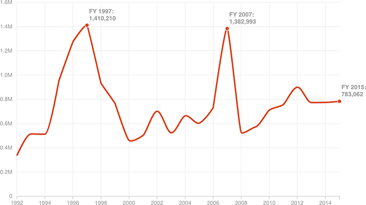

Applications For U.S. Citizenship Spiked In 1997 And 2007
The application is one of the first steps in the naturalization process, which includes an interview, a test and an oath. Activism related to California’s Proposition 187 and an application fee increase in 2007 may have contributed to the spikes in FY 1997 and FY 2007.
